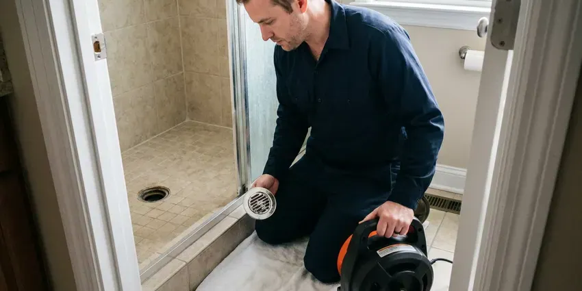
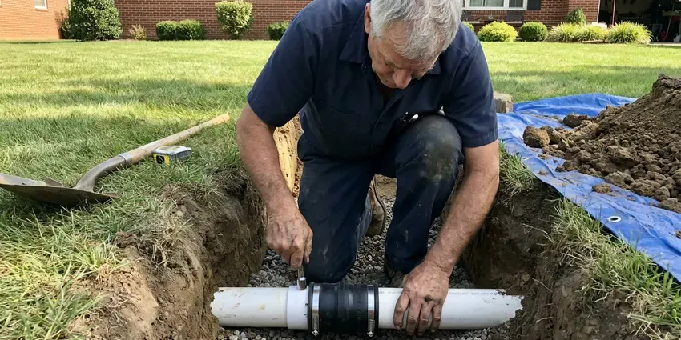

Sewer Line Cleaning in Appleton, WI
Protect your home from backups with scheduled sewer line cleaning in Appleton, WI, done by licensed local plumbers.
- Prompt Service
- Maintenance Plans Available
- Upfront Pricing
- Quick Sewer Line Clearing

Need Reliable Sewer Line Cleaning in Appleton, WI?
We clean, inspect and give you a clear report on the health of your sewer line.
Trusted Sewer Line Cleaning Services in Appleton, WI
At HKV Plumbing, we are committed to providing top-quality sewer line cleaning in Appleton, WI. Whether it is grease buildup, foreign objects, or invasive tree roots causing your issues, our skilled plumbers have the tools and expertise to identify and resolve the problem. We deliver a lasting solution to keep your drains flowing freely.
Our expertise includes:
- Locator transmitters to mark line path and depth
- Expert removal of tree roots, grease, and debris.
- Full lateral cleaning from building drain to street tap

Additional Drain Services Services in Appleton, WI
From stubborn kitchen clogs to main sewer backups, our drain services in Appleton, WI clear the line and keep it clear with camera-verified results.


Drain Cleaning near Appleton



Sewer Line Replacement near Appleton


Customers
Why Choose HKV Plumbing for Sewer Line Cleaning in Appleton, WI?
We give you the video and a written summary after every cleaning. That record helps you plan ahead and avoid surprise repairs.
- Planned Maintenance, Root-prone lines can be cleaned on a schedule so they stay ahead of a backup.
- Complete Lateral, We clean the whole line to the city connection, not just the nearest section.
- Advanced Tools, Our technicians use professional equipment like sewer cameras and hydro jetters for accurate diagnosis and effective cleaning.
Citywide Coverage
HKV Plumbing proudly serves every neighborhood of Appleton, so no matter where you are, expert sewer line cleaning is just a call away. Our local teams are familiar with the various sewer system layouts found across Appleton, from older homes to newer developments.
Experienced Team
Our sewer line techs clean laterals every week and have seen nearly every pipe material used in local homes. They adjust their methods for clay, cast iron, Orangeburg, ABS and PVC.
Safety-First Approach
Any repair or cleanout addition we recommend is done to local plumbing code. We pull permits where required and coordinate inspections.
Trusted Certified Appleton Plumbing Services Professionals
At HKV Plumbing, we take pride in providing certified plumbing services throughout Appleton, WI. Backed by recognized industry credentials, our experienced plumbers combine technical skill with genuine customer care. Whether it is repair, installation, or maintenance, we follow strict safety and quality standards to deliver lasting results you can trust.
Call Us Now PHCC Plumbing Contractor Recognition
PHCC Plumbing Contractor Recognition Better Business Bureau (BBB) Accreditation
Better Business Bureau (BBB) Accreditation Angi Certified Pro
Angi Certified Pro ISO 9001 Quality Management Certification
ISO 9001 Quality Management CertificationTrusted Sewer Line Cleaning Services in Appleton, WI
Sewer Camera Inspection in Appleton, WI
Before any cleaning, HKV Plumbing often recommends a sewer camera inspection. This involves inserting a high-resolution waterproof camera into your sewer line, letting us see the exact condition of your pipes. We can identify cracks, breaks, corrosion, root intrusion, and the precise location and nature of any blockage in Appleton, WI. This diagnostic step helps us choose the most appropriate and cost-effective cleaning or repair method, avoiding unnecessary digging or guesswork.

Sewer Line Camera Inspection in Appleton
A camera inspection shows the inside of your sewer line in real time. We look for bellies where water pools, offset joints, cracks, roots and corrosion. A locator in the camera head lets us mark the exact spot and depth on the surface. You get a copy of the video and our notes. This is useful for home buyers, sellers and anyone with recurring clogs.
Preventative Sewer Line Maintenance in Appleton
Preventative maintenance is key to avoiding expensive and inconvenient sewer line problems in Appleton. Regular cleaning, especially for properties with older plumbing or known issues like nearby trees, can save you from major headaches. We can schedule periodic sewer line cleaning using methods like hydro jetting to keep your pipes clear of buildup before it becomes a severe blockage, lengthening the lifespan of your plumbing system.
Sewer Camera Inspections in Appleton
Before any cleaning, a sewer camera inspection is often essential, especially for recurring issues in Appleton. This lets our technicians find the exact location and nature of the blockage, whether it is a crack, a sag in the pipe, or a large root ball. This non-invasive diagnostic tool helps us recommend the most suitable and cost-effective cleaning method, avoiding unnecessary digging and delivering a precise solution.
Pre-Purchase Sewer Line Cleaning and Inspection in Appleton, WI
Many home inspections do not include the sewer line, yet a failing lateral can cost thousands. We clean the line first so the camera can see the pipe walls plainly. Then we record the full length and give a written report. Buyers can use this to negotiate repairs or credits. Sellers can use it to show the line is in good shape.
Sewer Line Cleaning Cost Compared to Replacement in Appleton, WI
Cleaning a sewer line costs a few hundred dollars, while replacement can run into the thousands. If the pipe is structurally sound, regular cleaning is often the better value. If the camera shows a collapse or a long belly, cleaning only buys time. We show you the footage and both price options. You make the decision with complete information.
Routine Sewer Line Cleaning in Appleton
Routine cleaning clears the slow buildup of grease, paper and scale that narrows sewer laterals over time. We enter through a cleanout and run a sectional cable with the right blade for your pipe size. For heavier buildup we follow with hydro jetting to scrub the walls. The goal is a line that flows at full capacity. Most homeowners with older pipe do well with cleaning every one to two years.

Tree Root Removal from Sewer Lines in Appleton
Shifting soil and mature trees can lead to serious problems, with tree roots seeking moisture and getting into sewer pipes, especially those with small cracks or loose joints. Freeze and thaw cycles move the ground each year, which can crack older clay and cast iron sewer laterals. In Appleton, this is a common cause of recurring sewer backups. Our dedicated root cutting tools and hydro jetting remove these invasive roots, restoring the full diameter of your sewer line. We can also provide advice on preventing future root intrusion.
Sewer Line Cleaning Near Me in Appleton, WI
Our team is always ready to dispatch to your location in Appleton, offering complete sewer line cleaning right where you need it. We are focused on being a trusted local plumbing partner, delivering quality workmanship and great customer service on every job.
When you search for sewer line cleaning near me in Appleton, WI, HKV Plumbing is your trusted local expert. We are deeply familiar with the plumbing infrastructure throughout the area, from older homes with unusual pipe materials to modern developments. Being close by means a fast response time when you need professional sewer line service.
HKV Plumbing at a Glance
- Licensed and insured plumbers serving Appleton, WI
- Same-day appointments and 24/7 emergency response
- Upfront, flat-rate pricing before work begins
- 4.8-star rated by 448+ Wisconsin customers
Appleton Map
Appleton Information
- Population
- 74,719
- Area codes
- 920/715/414
- Service area
- Appleton and communities within 40 miles
- Nearby
- Oshkosh, Green Bay, Sheboygan, Wausau
Many established neighborhoods in Appleton, WI still rely on aging clay and cast iron sewer laterals, which makes regular cleaning one of the most effective ways to avoid backups.
Expert Services
Trust our professionals for reliable HKV Plumbing solutions in Appleton, WI.
Our Specialized Plumbing Services in Appleton, WI
At HKV Plumbing, we provide a complete range of plumbing services across Appleton, WI. From leak detection to full system installations, our team ensures fast, precise, and affordable service for both residential and commercial properties. Explore our core services below:


How Our Sewer Line Cleaning Service Works in Appleton, WI
Sewer line cleaning with us is simple and transparent from start to finish.
Request a Quote
Contact HKV Plumbing at (414) 432-4641 to describe your sewer line issues. We collect the needed details and schedule a convenient time for an inspection or service.
Diagnostic Inspection
Our technicians perform a thorough assessment, often using a sewer camera to identify the exact cause and location of the blockage within your sewer line.
Professional Cleaning
Based on the diagnosis, we use the most effective cleaning method, such as snaking or hydro jetting, to completely clear the blockage from your sewer pipes.
Frequently Asked Questions About Sewer Line Cleaning in Appleton
The cost of sewer line cleaning in Appleton can range from $250 to $800, depending on the severity of the clog, the length of the line, and the method used. More complex issues, like extensive tree root removal or hydro jetting, may be at the higher end. We provide upfront, clear pricing after a thorough inspection.
Older homes often have clay or cast iron, and some have Orangeburg fiber pipe. Most homes built in recent decades have ABS or PVC. Newer homes in Appleton usually use PEX or copper supply lines, which handle the climate well when properly protected.
We use professional equipment from trusted brands such as Spartan Tool, RIDGID, and Gorlitz for our sewer cameras, drain snakes, and hydro jetting machines. These brands are known for their reliability and effectiveness in tackling tough sewer line blockages.
Yes, HKV Plumbing backs our work. We offer a satisfaction guarantee on all our sewer line cleaning. Warranty details will be given at the time of service, for your peace of mind.
Yes, we provide a written guarantee that depends on the pipe condition we see on camera. Lines in good condition get longer coverage.
Slow drains in several fixtures, gurgling toilets, sewage odors and backups in the lowest drains are typical signs.
We use sectional and drum cable machines, hydro jetters and color camera systems with locators from trusted professional brands.
Root treatment products can slow regrowth after a mechanical cleaning, but they do not remove a root mass. Cleaning first is the essential step.
What People Are Saying About Our Plumbing Experts?

Robert G.
The trenchless sewer replacement saved our front yard. They walked us through the camera inspection footage first so we knew exactly what we were paying for.
Sewer Line Replacement · Sheboygan, WIJames P.
Our commercial plumbing system had a leak under the sink, and HKV Plumbing handled it professionally. The plumbers arrived quickly and restored everything without disruption to our customers.
Commercial Plumbing · Appleton, WI
Mark T.
When our office needed drain cleaning, HKV Plumbing provided quick, reliable service. The plumber arrived on time and made sure every drain flowed perfectly before leaving. Very satisfied.
Drain Cleaning · Sheboygan, WI
Daniel K.
A pipe burst at 11 pm and they actually answered. The plumber showed up within the hour, shut everything down, and had us back to normal the next morning. Could not ask for more.
Emergency Plumbing · Appleton, WI
Laura S.
I scheduled a water heater replacement, and the team made the process smooth and affordable. The new unit works perfectly, and they cleaned up after completing the job.
Water Heater Replacement · Milwaukee, WI
Emily R.
I called HKV Plumbing for plumbing repair, and the technician was fast, polite, and thorough. They explained the problem clearly and fixed it the same day. I will definitely hire them again. Highly recommended!
Plumbing Repair · Milwaukee, WI